墨奇®非接触指纹采集仪
核心优势
非接触采集
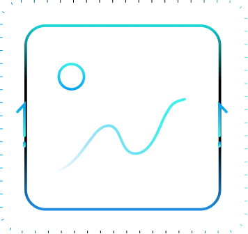
图像质量高
指纹面积大
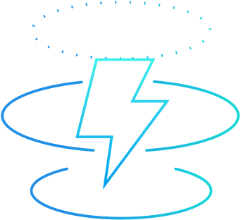
采集速度快

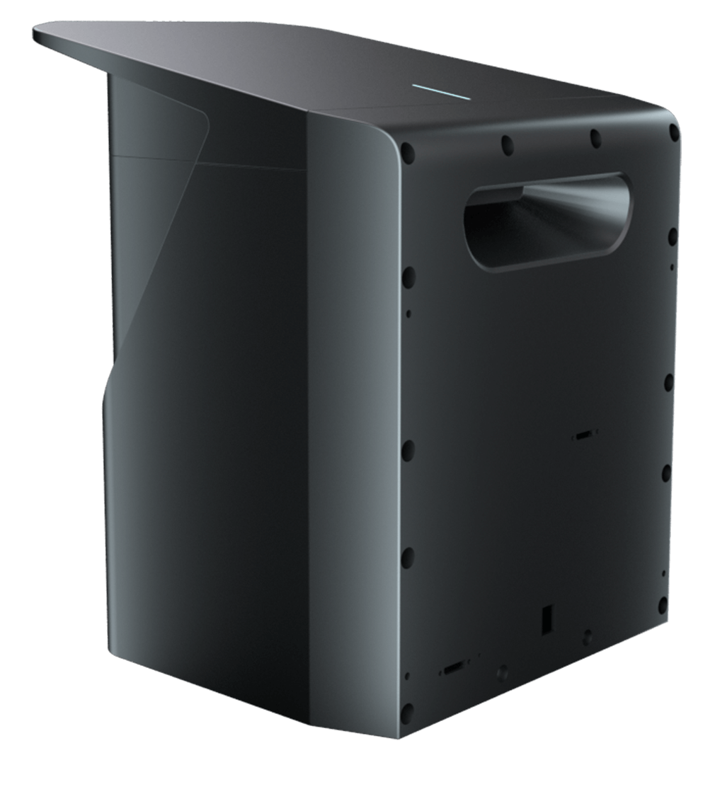
观看视频
非 接 触 采 集
精密的照明系统设计,
历时个月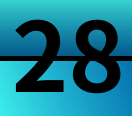次
反复设计实验,
只为了让指纹更清晰
精密的照明系统设计,
历时个月次
反复设计实验,
只为了让指纹更清晰
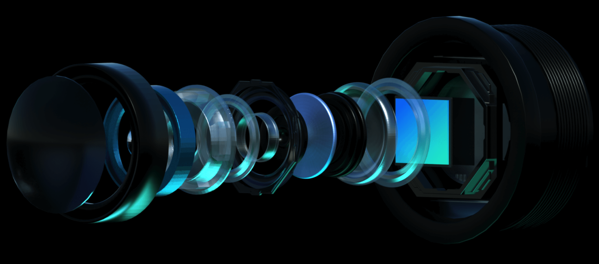
强大的性能加持
主频高达 1.8GHz 的六核处理器，算力高达 3.0Tops 的 AI
神经网络处理器，
每一枚指纹的生成都经过每秒 3 万亿次的运算
强大的性能加持
主频高达 1.8GHz 的六核处理器，算力高达 3.0Tops 的 AI
神经网络处理器，
每一枚指纹的生成都经过每秒 3 万亿次的运算
通过高精度
曲面重建算法，
使手指表面三维建模达到亚毫米精度， 将指纹技术全面升级到非接触 3D 时代
通过高精度曲面重建算法，
使手指表面三维建模达到亚毫米精度， 将指纹技术全面升级到非接触 3D 时代
手指无需接触设备，无需滚动
指纹无形变，不起雾，无接触污染
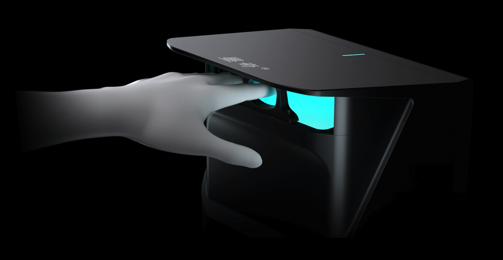
图像质量高

干湿浅等疑难指纹采集友好
滚动捺印效果比较
-
湿手指
-
干手指
-
浅指纹手指
传统采集仪
墨奇®非接触指纹采集仪
 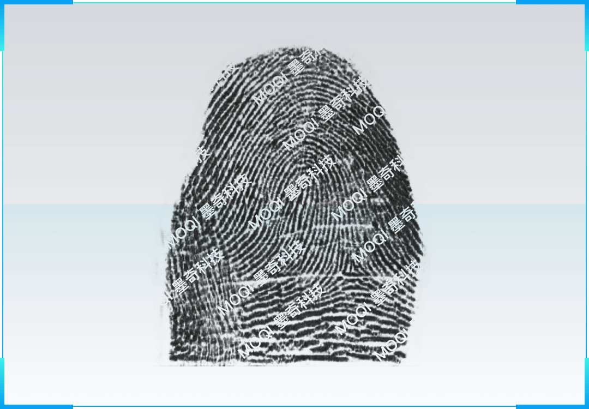
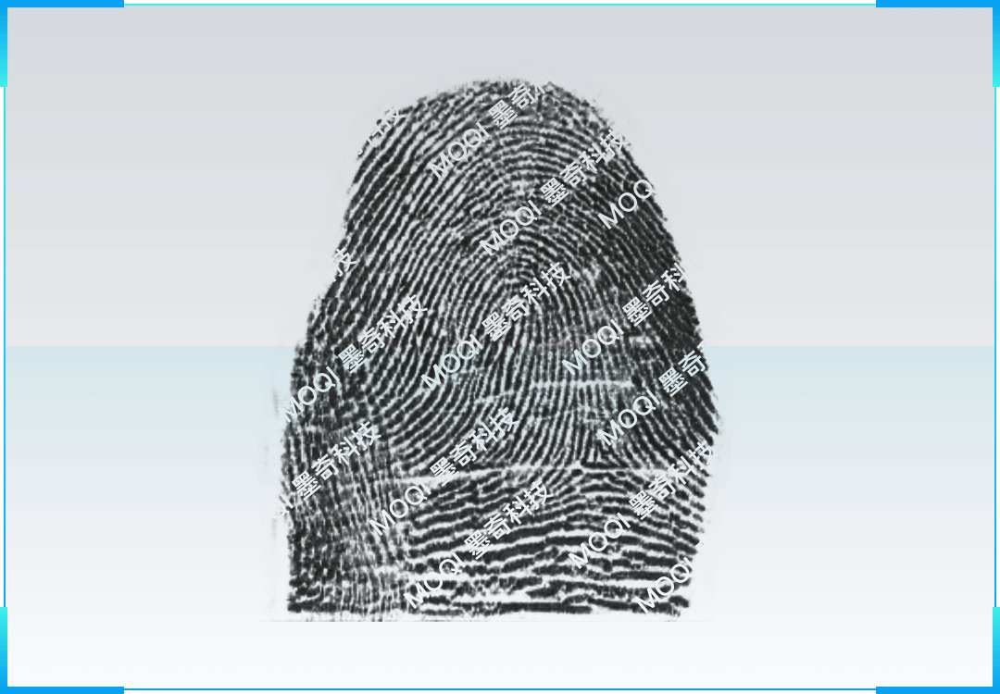
传统采集仪
墨奇®非接触指纹采集仪
 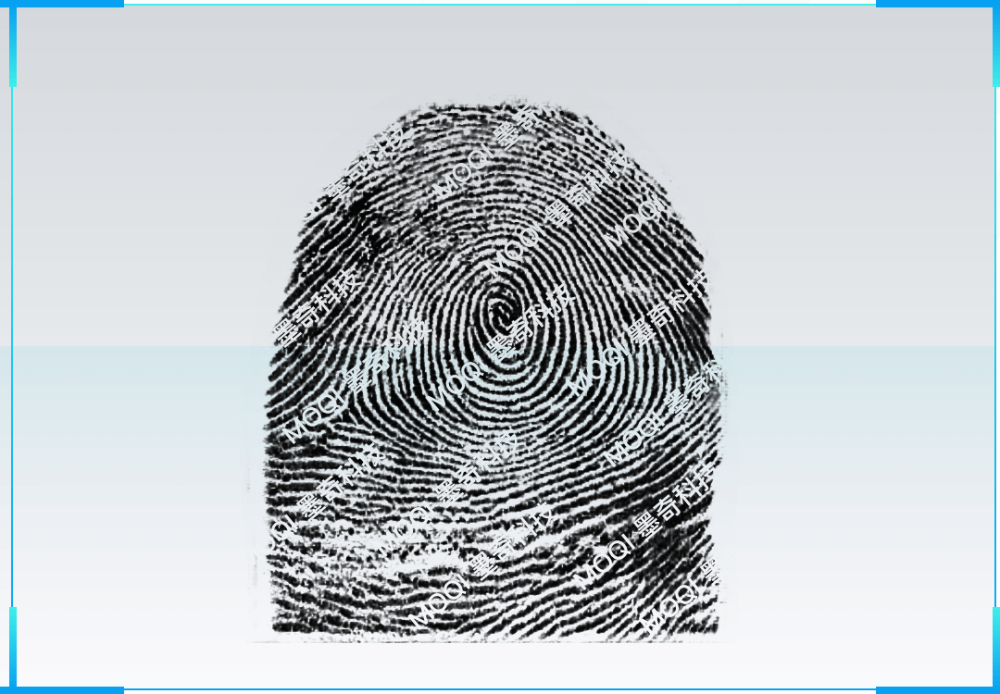
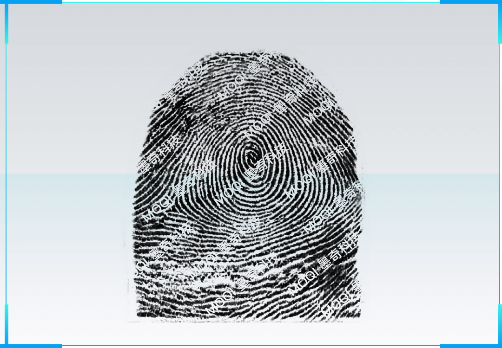
传统采集仪
墨奇®非接触指纹采集仪
图像面积大

采集面积大
比传统平面捺印面积大 70%
比传统滚面捺印面积大 20%
采集速度快
采集速度快,操作简单
200 秒内完成 10 指采集,伸手即采, 1 次采集同时输出平面捺印 和滚动捺印指纹
-

采集耗时少
-
操作简单
-
无需反复重采
-
自动采集
-
一次采集出平面指纹和捺印指纹
多重防护，增强您的体验
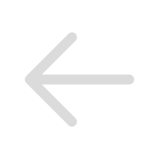
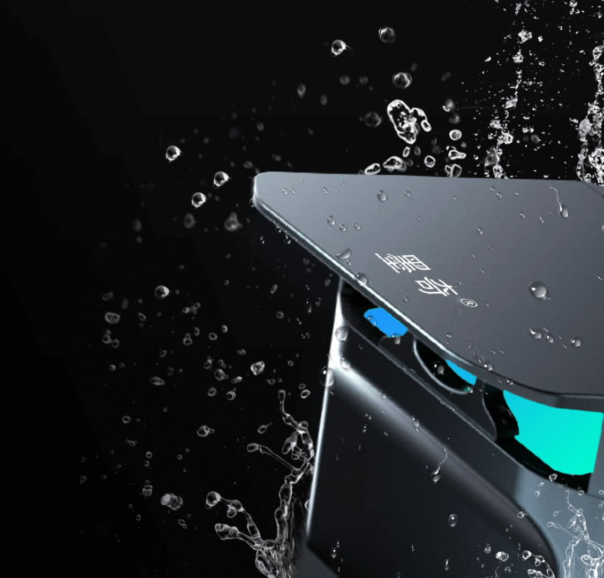
防水防尘
精湛工艺打造IP64级别的防水防尘，使用更经 得起恶劣环境的考验
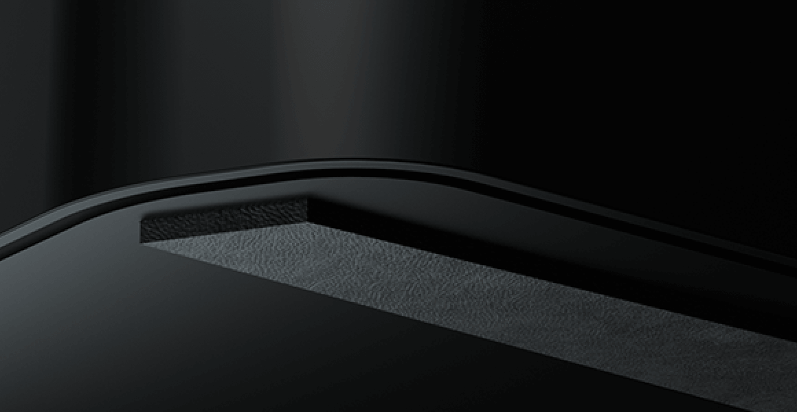
防滑脚垫
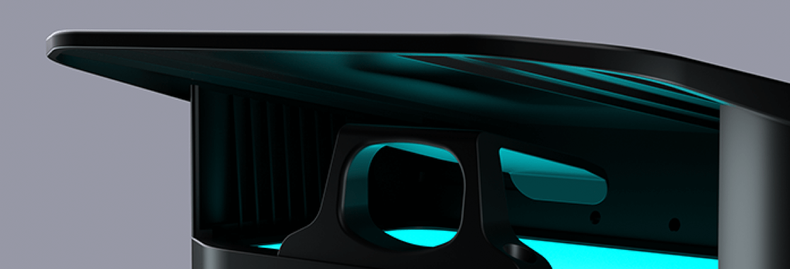
指托
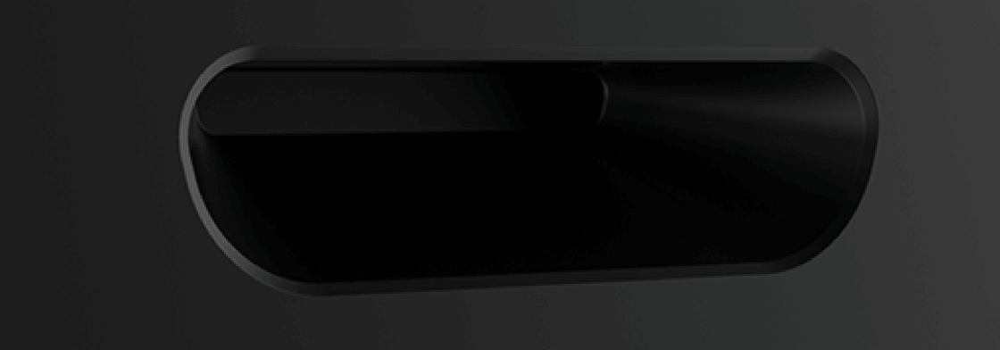
提手
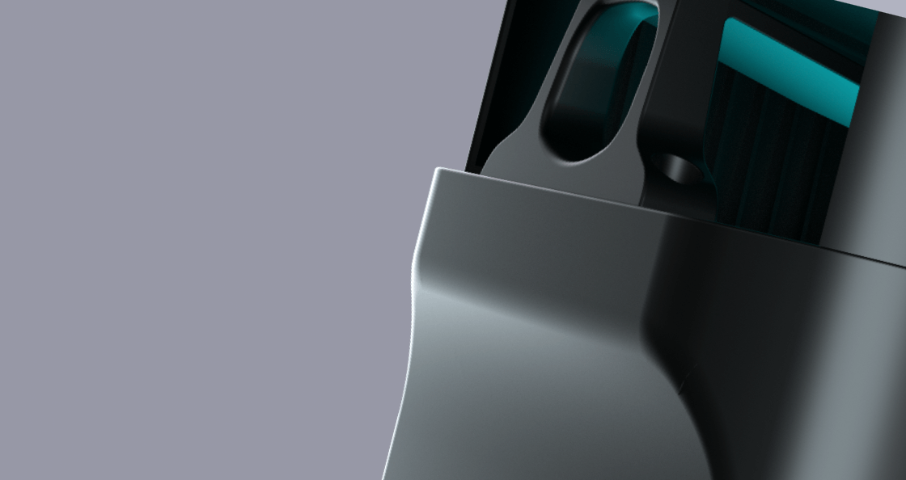